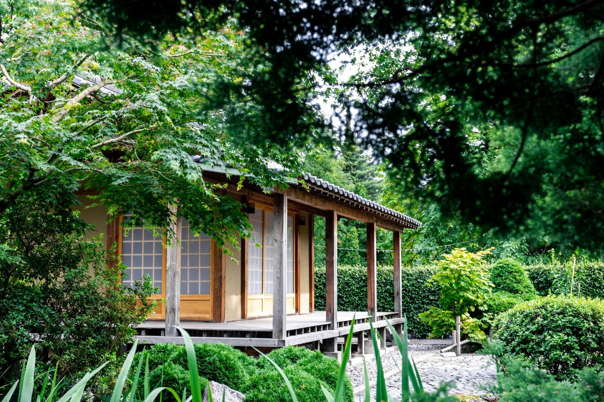
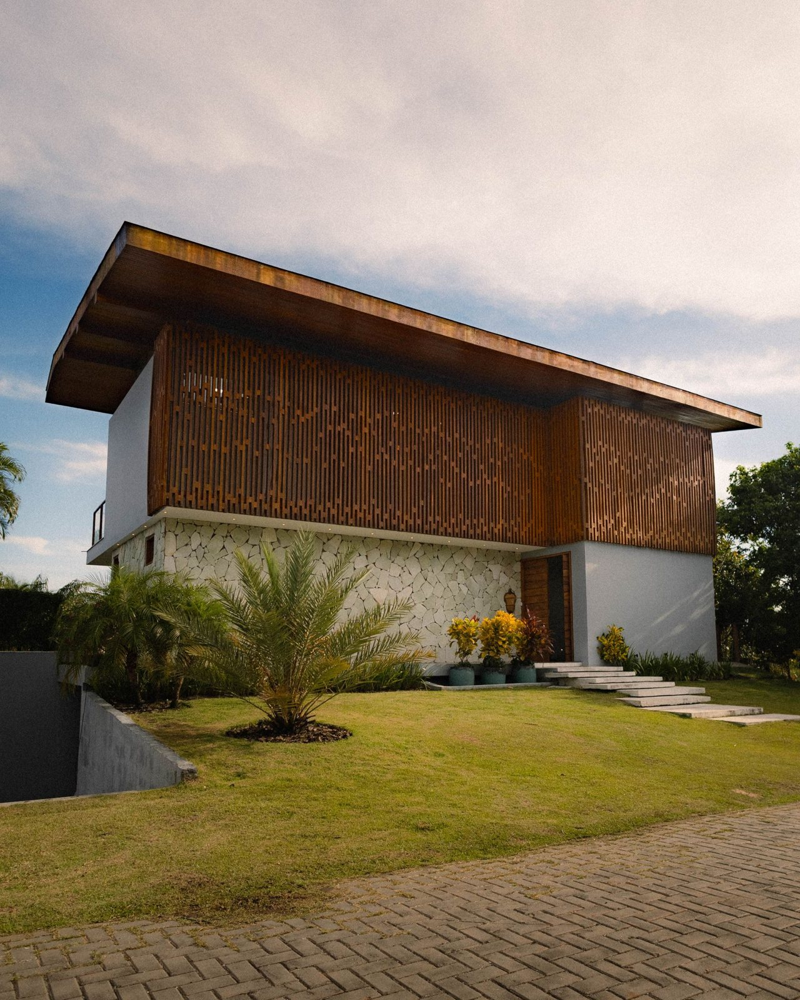
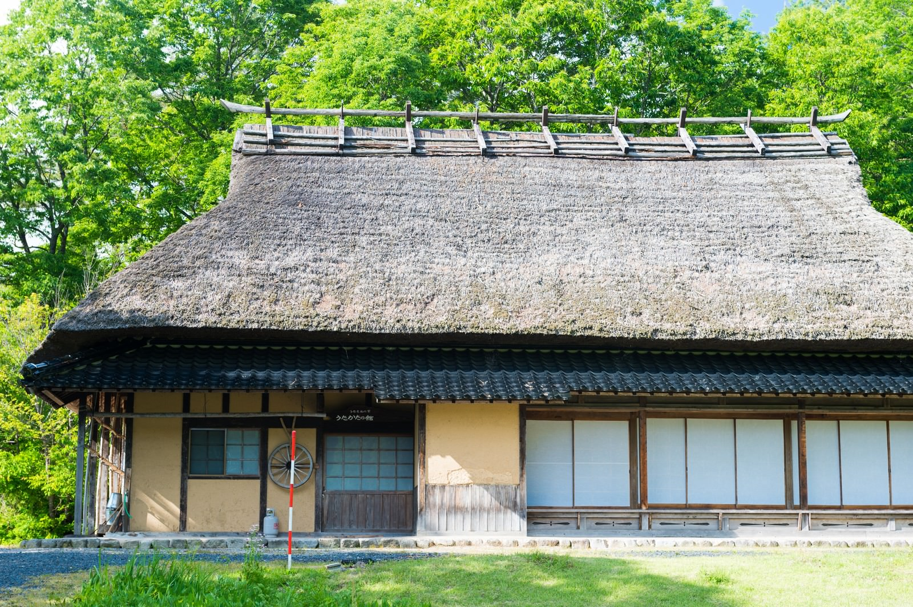
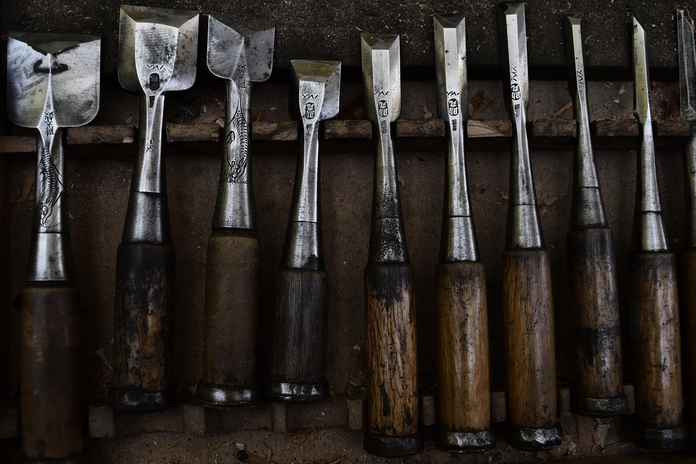

庭に開いた、平屋の家
一
- 場所
- 浜松市浜名区 2025年竣工
- 家族
- 夫婦＋子ども2人
- 延床
- 98㎡（29.6坪）
- 構造
- 木造平屋 杉の登り梁
南の庭に向かって、居間の天井を高く。夏は深い軒が日を切り、冬は低い日が奥まで入ります。
浜松で三代、大工の工務店です。天竜の杉と桧を、自社の大工が刻んで建てます。流行の形ではなく、30年後も直しながら住める家を。
土地の形と、住む人の暮らし方から考えた家です。どれも、同じ間取りはひとつもありません。

南の庭に向かって、居間の天井を高く。夏は深い軒が日を切り、冬は低い日が奥まで入ります。

玄関は一つ、台所は二つ。外壁の杉板は10年で銀色になります。塗り替えのいらない外壁です。

建て替えずに、梁と柱を残して耐震と断熱を入れ直しました。費用は新築の6割です。
天竜の杉と桧を使います。山から製材所、うちの作業場まで車で1時間。乾燥と刻みを自分たちで見られる距離です。
打ち合わせに大工が同席します。図面の線が、どう刻まれ、どう組まれるかを知っている人が、話を聞きます。
30年たてば、水まわりも屋根も替えどきが来ます。替えやすいように配管と下地を組んでおくのが、うちの流儀です。



はじめての相談から引き渡しまで、だいたい14か月。設計に時間をかけ、工事は急がず、を基本にしています。
間取りだけでなく、窓から何が見えるか、朝日がどこに入るかを模型で確かめます。
あなたの家の柱と梁が作業場に並びます。墨付けをした大工が説明します。
1年・2年・5年・10年で点検に伺います。木は動くので、建具の調整はうちの仕事です。
オプションではなく、どの家も同じ仕様です。数字の根拠は、設計時にお渡しする計算書に全部書いてあります。
UA値 0.46 以下。壁は高性能グラスウール105mm＋付加断熱45mm。窓は樹脂サッシのトリプルガラス。
許容応力度計算を全棟で行います。平屋でも、2階建てでも同じです。
完成前に全棟で測定し、結果を引き渡し時にお渡しします。平均は0.3です。
構造・断熱・維持管理の基準を満たし、全棟で認定を取ります。固定資産税と住宅ローン控除で有利です。

お施主さまのご厚意で、引き渡し前の2日間だけ見ていただけます。1組ずつ、1時間。大工が案内します。
初代の杉浦勝は天竜の山で杣として働き、昭和の初めに大工になりました。二代目が浜松に作業場を構え、三代目の現社長が「天竜の木で、天竜の木らしい家を」と決めて今の形になりました。大工8名、設計2名の小さな工務店です。年に建てられる家は、8棟まで。